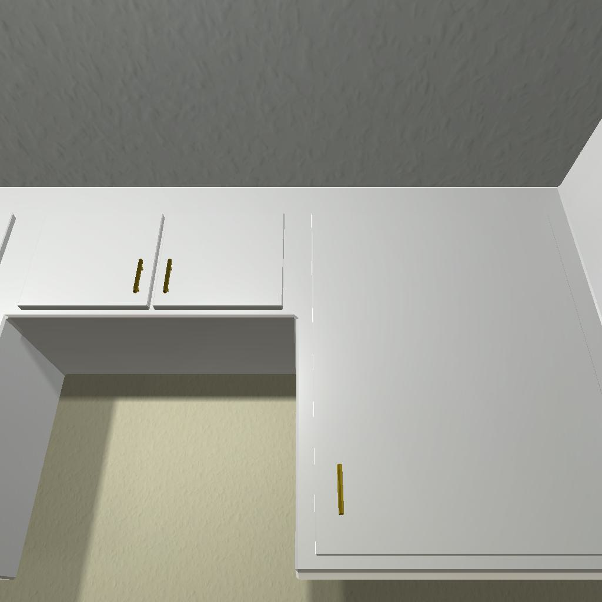

---------------------------------------------------------task: 18---------------------------------------------------------
--------------------------------------------------------------------------------------------------------------------------------------------------------------------
--------------------------------------------------------------------------------------------------------------------------------------------------------------------
Step:--------------------------------------------------------------------------4-------------------------------------------------------------------------------
----------------------------------------
VLM Prompt:
Image1:
Image2:
**Instruction**
1. Analyze the provided images to identify all visible household objects and compare the difference between images (e.h. whether the object is opened or not and taken on hand or not), focusing on those relevant to the task description "put a cool pot in cabinet."
2. Use the analysis of images and the task hint "The agent must find an object of the desired type, pick it up, go to a fridge, cool the object with the fridge, then find the correct location to place it, and put it down there. The agent does not need to use the fridge button or open the fridge to cool the object, and the agent just needs to do action that is "cool the object with the fridge"." to answer the question: what is the most reasonable action in the choices for the task description "put a cool pot in cabinet"?
3. Decide and write the answer using the template: The answer is: (i): , where i is the real number. If there is no desired object in images, search every place based on **Initial Observation** to find the object. And if no one is exactly correct, choose a similar answer.
**Initial Observation**
You are in the middle of a room. Looking quickly around you, you can see cabinet (1-20), countertop (1-3), coffeemachine (1), toaster (1), sink (1), fridge (1), microwave (1), garbagecan (1), drawer (1-3), sinkbasin (1), stoveburner (1-4), shelf (1-3)
**Answer Choices**
(1): go to cabinet 3
(2): go to cabinet 4
(3): go to cabinet 6
(4): go to countertop 1
(5): go to coffeemachine 1
(6): go to cabinet 7
(7): go to toaster 1
(8): go to cabinet 8
(9): go to sink 1
(10): go to fridge 1
(11): go to microwave 1
(12): go to garbagecan 1
(13): go to cabinet 9
(14): go to cabinet 10
(15): go to countertop 2
(16): go to cabinet 11
(17): go to cabinet 12
(18): go to drawer 1
(19): go to countertop 3
(20): go to drawer 2
(21): go to cabinet 13
(22): go to sinkbasin 1
(23): go to cabinet 14
(24): go to drawer 3
(25): go to stoveburner 1
(26): go to stoveburner 2
(27): go to stoveburner 3
(28): go to cabinet 15
(29): go to stoveburner 4
(30): go to cabinet 16
(31): go to cabinet 17
(32): go to cabinet 18
(33): go to cabinet 19
(34): go to cabinet 20
(35): go to shelf 1
(36): go to shelf 2
(37): go to shelf 3
(38): open cabinet 5
(39): close cabinet 5
(40): examine cabinet 5
**Answer**
Let's think step by step by following the instructions.
----------------------------------------
----------------------------------------
Original Response:
Image Analysis:
- In Image 1, we see a top view of a closed cabinet with golden handles. There are no pots visible in the image.
- In Image 2, the same cabinet is shown from a different angle, and it appears to be closed as well, with no pots visible.
Task Description Analysis:
- The task is to put a "cool pot" in a cabinet. This means the agent needs to find a pot, cool it with the fridge, and then place it in the cabinet.
Initial Observation:
- The observation lists various objects and their quantities in the room, including cabinets, countertops, and a fridge, among others.
Based on the analysis, the first step would be to find a pot. Since no pot is visible in the provided images, the agent needs to search for one. The task does not require opening the fridge to cool the object, so we can skip the action of using the fridge button or opening the fridge.
The most reasonable action from the given choices for the task "put a cool pot in cabinet" would be to search the cabinets where a pot is most likely to be found.
The answer is: (38): open cabinet 5
This action is chosen because the agent needs to find a pot first, and opening cabinets is a logical step in searching for one. Since no specific cabinet number is mentioned in the task description, cabinet 5 is chosen as it is the only cabinet-related action that involves interaction (opening) in the answer choices.
----------------------------------------
----------------------------------------
>>> Refine Original VLM Response and Get Pure Action: open cabinet 5
This action is chosen because the agent needs to find a pot first, and opening cabinets is a logical step in searching for one
----------------------------------------
-----------------------------------------------------------------
Running time: 13.779139041900635 seconds
Total Money: 8.703560000000001
-----------------------------------------------------------------
-----------------------------------------------------------------
Text Observation:Nothing happens.
-----------------------------------------------------------------
UNSUCCEED